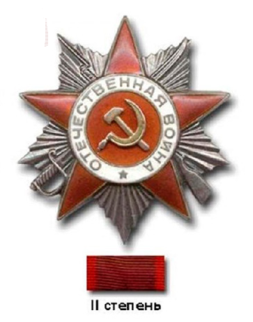

-
Золотая звезда
Медаль «Золотая Звезда» — знак отличия лиц, удостоенных звания «Героя Советского Союза»
-
3 Ордена Ленина
Орден Ленина — высшая государственная награда Союза Советских Социалистических Республик
-
2 Ордена Красной Звезды
За большие заслуги в деле обороны СССР
-
4 Ордена Красного Знамени
За особую храбрость, самоотверженность и мужество, проявленные при защите социалистического Отечества
-
Орден Кутузова I степени
Награда, учреждённая во время Великой Отечественной войны
-
Орден Суворова III степени
Награждались командиры Красной Армии за выдающиеся успехи в деле управления войсками
-

2 Ордена Отечественной войны I степени
За проявление в боях за Советскую Родину храбрости, стойкости и мужества, а также действия способствовавшие успеху боевых операций
-
Орден Отечественной войны II степени
За проявление в боях за Советскую Родину храбрости, стойкости и мужества, а также действия способствовавшие успеху боевых операций
-
Медаль "За оборону Сталинграда"
За участие в обороне Сталинграда 12 июля - 19 ноября 1942 года
-
Медаль "За освобождение Варшавы"
За непосредственное участие в героическом штурме и освобождении Варшавы в период 14-17 января 1945 года, а также организацию боевых операций при освобождении этого города.
-
Медаль "За победу над Германией в Великой Отечественной войне 1941-1945 гг."
За участие в рядах Красной Армии, Военно-Морского Флота и войск НКВД на фронтах Отечественной войны или обеспечение победы своей работой в военных округах